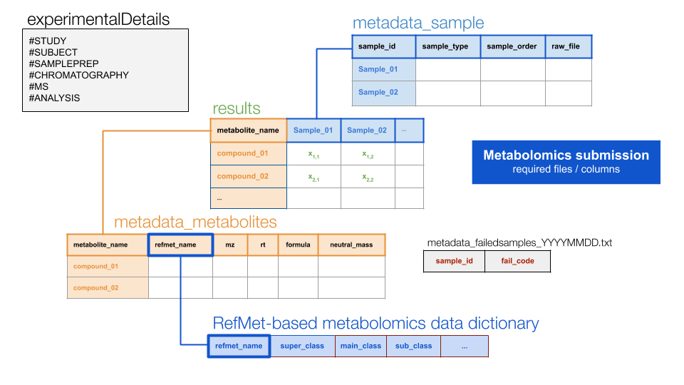

Expected submission
The folder/file structure of a required metabolomics submission is as follows:
Example:
PASS1A-06/
T55/
HILICPOS/
metadata-phase.txt ## Note: "new" required file
file_manifest_YYYYMMDD.txt
BATCH1_20190725/
RAW/
Manifest.txt
file1.raw
file2.raw
etc
PROCESSED_20190725/
metadata_failedsamples_[cas_specific_labeling].txt
NAMED/
results_metabolites_named_[cas_specific_labeling].txt
metadata_metabolites_named_[cas_specific_labeling].txt
metadata_sample_named_[cas_specific_labeling].txt
metadata_experimentalDetails_named_[cas_specific_labeling].txt
UNNAMED/ ## Note: Only required for untargeted assays
results_metabolites_unnamed_[cas_specific_labeling].txt
metadata_metabolites_unnamed_[cas_specific_labeling].txt
metadata_sample_unnamed_[cas_specific_labeling].txt
metadata_experimentalDetails_unnamed_[cas_specific_labeling].txtWith the following file relations…

Install MotrpacBicQC
First, download and install R and RStudio:
Then, open RStudio and install the devtools package
install.packages("devtools")Finally, install the MotrpacBicQC package.
Important: install it every time that you run the QCs
to ensure that the latest version is used.
library(devtools)
devtools::install_github("MoTrPAC/MotrpacBicQC", build_vignettes = FALSE)Usage
Load the library
And run any of the following tests to check that the package is correctly installed and it works. For example:
# Just copy and paste in the RStudio terminal
check_metadata_metabolites(df = metadata_metabolites_named, name_id = "named")
check_metadata_samples(df = metadata_sample_named, cas = "umichigan")
check_results(r_m = results_named, m_s = metadata_sample_named, m_m = metadata_metabolites_named)which should generate the following output:
check_metadata_metabolites(df = metadata_metabolites_named, name_id = "named")## + (+) All required columns present## + (+) `metabolite_name` OK## + (+) `refmet_name` unique values: OK## + Validating `refmet_name` (it might take some time)## (-) `refmet_name` [`Leucine/Isoleucine`] must be modified to the RefMet Standarized name: "Leucine" (Error RN2)## (-) `refmet_name` [`Oxoglutaric acid`] must be modified to the RefMet Standarized name: "2-Oxoglutaric acid" (Error RN2)## (-) `refmet_name` [`Citric acid/Isocitric acid`] must be modified to the RefMet Standarized name: "Citric acid" (Error RN2)## (-) Total number of missed ids on MW: 3## - (-) SUMMARY: 3 `refmet_name` not found in RefMet Metabolomics Data Dictionary: FAIL## + (+) {rt} all numeric: OK## + (+) {mz} all numeric: OK## + (+) {`neutral_mass`} all numeric values OK## + (+) {formula} available: OK
check_metadata_samples(df = metadata_sample_named, cas = "umichigan")## - (-) `metadata_sample`: recently required COLUMN NAMES are missed: Adding with NA values: FAIL## + (+) All required columns present## + (+) `sample_id` seems OK## + (+) `sample_type` seems OK## + (+) `sample_order` is numeric## + (+) `sample_order` unique values OK## + (+) `raw_file` unique values: OK## - (-) `extraction_date` has NA values: FAIL## - (-) `acquisition_date` has NA values: FAIL## - (-) NA values detected in column ` lc_column_id `: FAIL## - ( ) Number of unique values in column ` lc_column_id `: 1
check_results(r_m = results_named, m_s = metadata_sample_named, m_m = metadata_metabolites_named)## + (+) All samples from `results_metabolite` are available in `metadata_sample`## + (+) `metabolite_name` is identical in both [results] and `metadata_metabolites` files: OK## + (+) `sample_id` columns are numeric: OKHow to process a metabolomics dataset
Two approaches available:
Check full PROCESSED_YYYYMMDD folder (recommended)
Run test on the full submission. For that, run the following command:
validate_metabolomics(input_results_folder = "/full/path/to/PROCESSED_YYYYMMDD",
cas = "your_site_code")cas can be one of the followings:
- “broad_met” = Broad Metabolomics
- “emory” = Emory
- “mayo” = Mayo Clinic
- “umichigan” = Umichigan
- “gtech” = Georgia Tech
- “duke” = Duke
This function can also print out a number of QC plots, including:
- the sum of intensity/concentration per sample
- Number of identifications
- Sample Intensity/concentration distribution (boxplots)
- Total number of samples
- Total number of identifications (named/unnamed)
For that, run it like this:
validate_metabolomics(input_results_folder = "/full/path/to/PROCESSED_YYYYMMDD",
cas = "your_site_code",
f_proof = TRUE,
out_qc_folder = "/path/to/the/folder/to/save/plots/",
printPDF = TRUE)It is recommended to provide the path to the folder where the pdf
files should be saved (argument: out_qc_folder). If it
doesn’t exist, it will be created.
Check individual files
In the rare case that you need to process individual files, that also can be done. Cases:
Check metadata metabolites:
# Open the metadata_metabolites file(s)
metadata_metabolites_named <- read.delim(file = "/path/to/your/file", stringsAsFactors = FALSE)
metadata_metabolites_unnamed <- read.delim(file = "/path/to/your/file", stringsAsFactors = FALSE)
check_metadata_metabolites(df = metadata_metabolites_named, name_id = "named")
check_metadata_metabolites(df = metadata_metabolites_unnamed, name_id = "unnamed")Check metadata samples:
# Open your files
metadata_sample_named <- read.delim(file = "/path/to/your/file", stringsAsFactors = FALSE)
metadata_sample_unnamed <- read.delim(file = "/path/to/your/file", stringsAsFactors = FALSE)
check_metadata_samples(df = metadata_sample_named, cas = "your_side_id")
check_metadata_samples(df = metadata_sample_unnamed, cas = "your_side_id")Check results, which needs both both metadata metabolites and samples
# Open your files
metadata_metabolites_named <- read.delim(file = "/path/to/your/file", stringsAsFactors = FALSE)
metadata_sample_named <- read.delim(file = "/path/to/your/file", stringsAsFactors = FALSE)
results_named <- read.delim(file = "/path/to/your/file", stringsAsFactors = FALSE)
check_results(r_m = results_named,
m_s = metadata_sample_named,
m_m = metadata_metabolites_named)Help
Additional details for each function can be found by typing, for example:
?validate_metabolomicsNeed extra help? Please, either contact the BIC at motrpac-helpdesk@lists.stanford.edu and/or submit an issue here providing as many details as possible